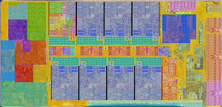

Раздел: Центральные процессоры (CPU)
Центральный процессор — это главный вычислительный мозг любого компьютера. В 2026 году архитектурная гонка между AMD и Intel вышла на пиковые показатели эффективности. Переход на более тонкие техпроцессы позволил кардинально снизить энергопотребление и нарастить объемы встроенной кэш-памяти, что дало колоссальный прирост в сложных математических задачах, стриминге, рендеринге и современных играх.
ТОП-5 процессоров на 2026 год
Здесь вам представлен независимый рейтинг лучших CPU для покупки в 2026 году, разделенный по категориям применения:
-
1 место — AMD Ryzen 9 9950X3D (Абсолютный лидер)
Флагманский 16-ядерный монстр, объединивший в себе архитектуру Zen 5 и усовершенствованную подложку 3D V-Cache. Бескомпромиссное решение, которое удерживает корону как в тяжелых рабочих станциях (монтаж 8К-видео, компиляция кода), так и в играх.
-
2 место — AMD Ryzen 7 9850X3D (Лучший выбор для геймеров)
Новинка начала 2026 года, сместившая с пьедестала народный 9800X3D. За счет оптимизированной работы с частотами и массивного кэша L3, этот 8-ядерный процессор выдает максимальную и наиболее стабильную частоту кадров (FPS) в современных играх.
-
3 место — Intel Core Ultra 9 285K (Король вычислительной мощности)
Флагман от Intel, демонстрирующий потрясающую многопоточную производительность. Благодаря отказу от технологии Hyper-Threading в пользу высокоэффективных кластеров ядер, этот процессор стал намного «холоднее» предшественников и великолепно проявляет себя в 3D-визуализации.
-
4 место — Intel Core Ultra 7 270K Plus (Оптимальный баланс цены и качества)
Лучший процессор среднего/верхнего уровня от Intel на 2026 год. Модификация «Plus» получила отличную оптимизацию работы с дискретными видеокартами и очень конкурентный ценник, что делает ее идеальным ядром для универсального домашнего ПК.
-
5 место — AMD Ryzen 5 9600X (Лучший бюджетный выбор)
Доступный 6-ядерный процессор, цена на который в 2026 году значительно снизилась. Он потребляет минимум энергии, слабо греется (подходит для компактных систем) и полностью перекрывает потребности базового игрового ПК или офисной станции.
Сводные технические характеристики ТОП-процессоров
| Модель CPU |
Ядра / Потоки |
Макс. частота |
Объем кэша L3 |
Основное назначение |
| AMD Ryzen 9 9950X3D |
16 / 32 |
до 5.7 ГГц |
128 МБ |
Игры + Тяжелая работа |
| AMD Ryzen 7 9850X3D |
8 / 16 |
до 5.4 ГГц |
96 МБ |
Максимальный игровой FPS |
| Intel Core Ultra 9 285K |
24 / 24 |
до 5.7 ГГц |
36 МБ |
Рендеринг, Архивация, ИИ |
| Intel Core Ultra 7 270K Plus |
20 / 20 |
до 5.5 ГГц |
33 МБ |
Универсальный ПК / Стриминг |
| AMD Ryzen 5 9600X |
6 / 12 |
до 5.4 ГГц |
32 МБ |
Бюджетный гейминг / Офис |
Технологический процесс и структура кристалла
Современные кремниевые чипы состоят из миллиардов транзисторов. Посмотреть микрофотографию строения кристалла под микроскопом (разводка ядер и блоков кэша) вы можете на изображении ниже:

← Вернуться на главную